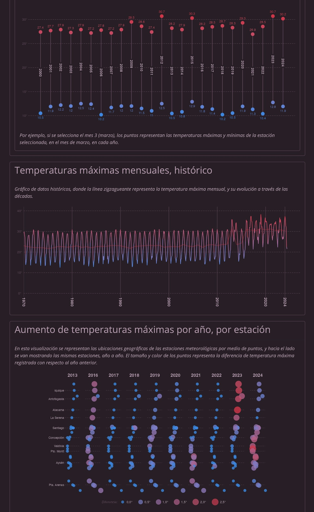
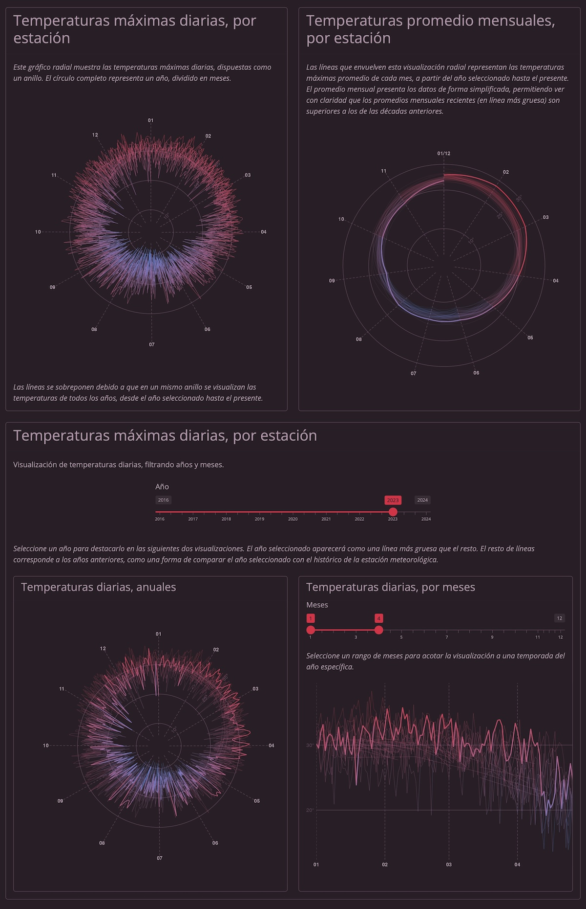

App: Temperaturas extremas en Chile
Visualizador de datos sobre crisis climática
Visualizador de datos de temperaturas extremas en el país. Permite consultar rápidamente datos históricos para obtener gráficos que revelan los cambios en temperaturas a través del tiempo en nuestro país. El objetivo es visibilizar los efectos del cambio climático por medio de los datos.
En esta plataforma puedes visualizar datos históricos sobre temperaturas extremas del país, cuyo objetivo es visibilizar los efectos del cambio climático por medio de los datos.
Los datos se obtienen desde el Portal de Datos Abiertos del Estado de Chile mediante web scrapping. El proyecto unifica todas las fuentes de datos separadas en una sola base de datos de temperaturas, los cuales son utilizados en la plataforma de visualización interactiva.
Los datos son obtenidos desde fuentes oficiales, y abarcan aproximadamente desde 1970 a 2024.
Este repositorio obtiene datos desde el Portal de Datos Abiertos del Estado de Chile mediante web scrapping, unifica todas las fuentes de datos separadas en una sola base de datos de temperaturas, y produce visualizaciones y una plataforma de visualización interactiva.
Accede al visualizador de datos por este enlace.
El producto principal de este código es una base de datos de temperaturas extremas en Chile, por estación meteorológica y por día, desde 1970 a 2024
disponible convenientemente en un solo archivo .csv (también disponible
en .rds y
en formato .parquet)
Este proyecto parte por dos razones: porque quería reutilizar los datos publicados en la plataforma de Datos Abiertos del Estado (muy recomendable, pero también requiere de muchas mejoras), y porque genuinamente tenía curiosidad sobre la evolución en las temperaturas que estamos viviendo.
Me tardé solamente la tarde del domingo en hacer el scraping de datos, y parte del domingo y la mañana del lunes en hacer el dashboard. Desarrollar este tipo de proyectos con R es realmente rápido!
Lo otro que quería hacer eran estos gráficos radiales que muestran múltiples años en un anillo de meses. Nunca los había hecho! Quedan muy lindos y son muy fáciles de hacer con {ggplot2}.
Nunca hab√≠a explorado ni visualizado datos de clima, as√≠ que acepto cualquier cr√≠ticaÔ∏è! ü•∞


Obtención de los datos
Los datos son obtenidos de forma semi-automática usando técnicas de web scrapping con el paquete {RSelenium}. Esto debido a que el portal de datos abiertos no tiene una buena interfaz de usuario (no permite abrir resultados en nuevas pestañas, no permite copiar los enlaces de las fuentes de datos, y hay que actualizar las páginas entre 1 a 8 veces para que muestren los resultados). El script obtener_temperaturas.R simplifica tres tareas para obtener los datos: realizar una búsqueda y ampliar la cantidad de resultados mostrados en la página, entrar a cada uno de los enlaces del resultado de la búsqueda, y dentro de los conjuntos de datos, descargar todos los archivos con un solo comando. Esta ahorra muchísimo tiempo, considerando que los datos de temperatura vienen separados por semestre y año, lo que significa que hay que entrar a aproximadamente 16 conjuntos de datos distintos, y dentro de estos conjuntos de datos hay que descargar aproximadamente 6 archivos separados, mientras la plataforma dificulta abrir estos resultados por pestañas.
Fuentes
- Datos de la Dirección General de Aeronáutica Civil subidos a la plataforma de Datos Abiertos del Estado
- Dirección Meteorológica de Chile
- Fecha de publicación:
- December 16, 2024
- Extensión:
- 3 minute read, 537 words
- Categorías:
- Aplicaciones